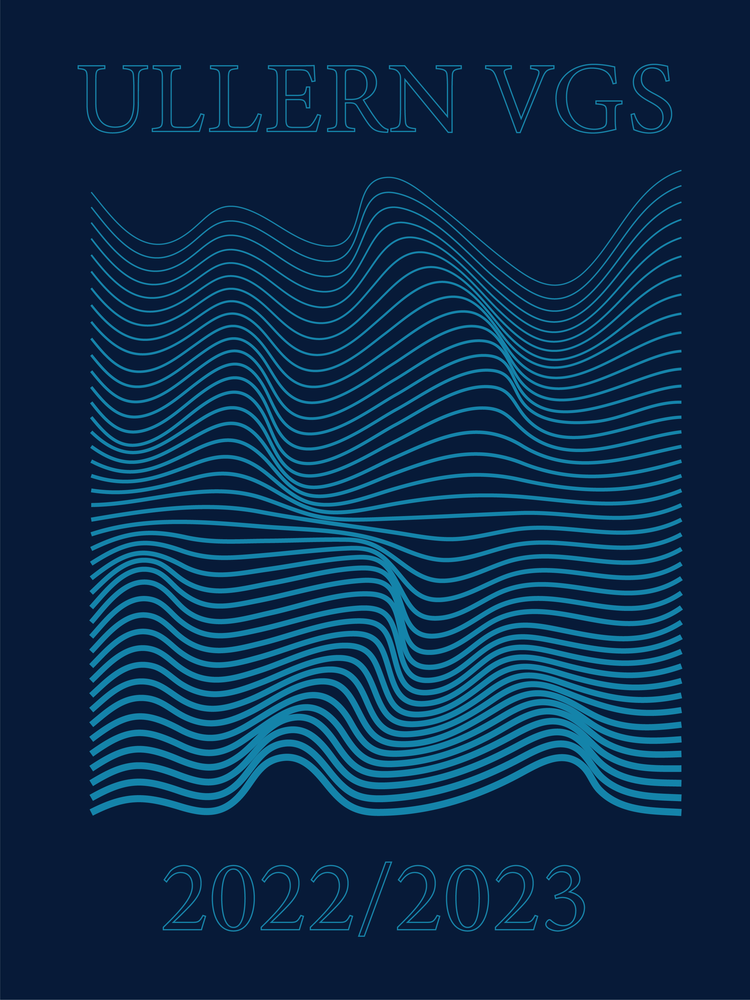

Medier & visuell design
Ullern VGS 2022/2023 – forside
Forsidedesign med bølgende linjegrafikk og en begrenset mørk blå og turkis fargepalett.
- Kategori
- Omslagsdesign
- Periode
- 2022/2023
- Verktøy
- Adobe Illustrator
Om prosjektet
Forsiden er laget for Ullern VGS 2022/2023. Det repeterte linjemønsteret skaper bevegelse i komposisjonen, mens den smale fargepaletten holder uttrykket samlet.
Resultat
